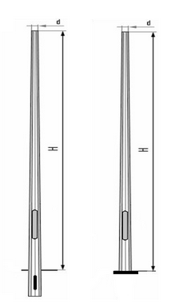
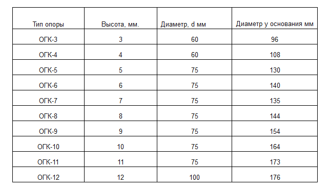

Опоры конические восьмигранного сечения предназначены для установки на улицах городов, площадях, парковочных зонах автотранспорта, скверах, парках. Опоры изготавливаются из листовой стали толщиной от 3 до 10 мм, в зависимости от назначения. Очевидным преимуществом данного вида опор является относительно небольшой вес, удобство транспортировки. Область применения: парки, скверы, дороги с малым, средним и оживленным движением пешеходные улицы прилегающие территории общественных зданий. Опоры органично вписываются в архитектуру современного города. Граненые опоры эстетичны и выглядят современно, а простота монтажа и низкий вес делают их наиболее привлекательными по сравнению с традиционными железобетонными опорами.
Долговечность эксплуатации достигается методом горячего цинкования и составляет 35-50 лет, в зависимости от условий окружающей среды.
Условные обозначения:
ОГК - опора граненая коническая
ф - фланцевое соединение опоры и закладного элемента
3,0-12,0 рабочая высота (размер надземной части) граненой конической опоры
